Comparison with Baselines
Full Pipeline: Single Image to Video Generation
The blue ball strikes the dominos.
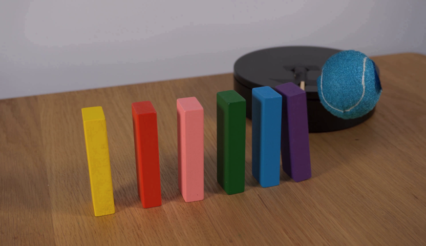
The macarons and jellies fall to the table.
The sand castle collapses.
The book falls forward.
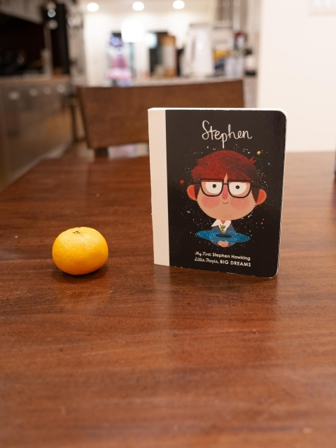
Apple drops to the right.
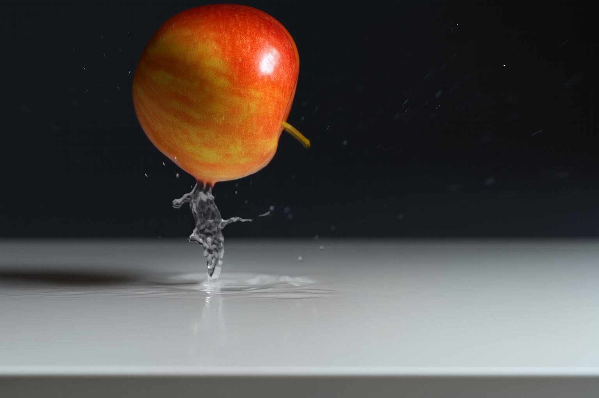
The blue ball drops to the green playdough.
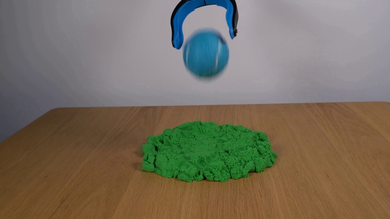
The yellow brick falls right.
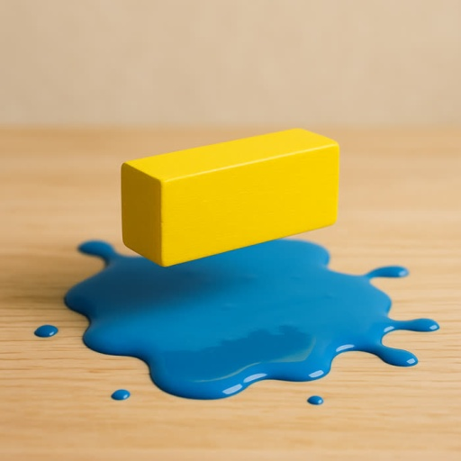
The ball on the left moves right, hits the ball on the right.
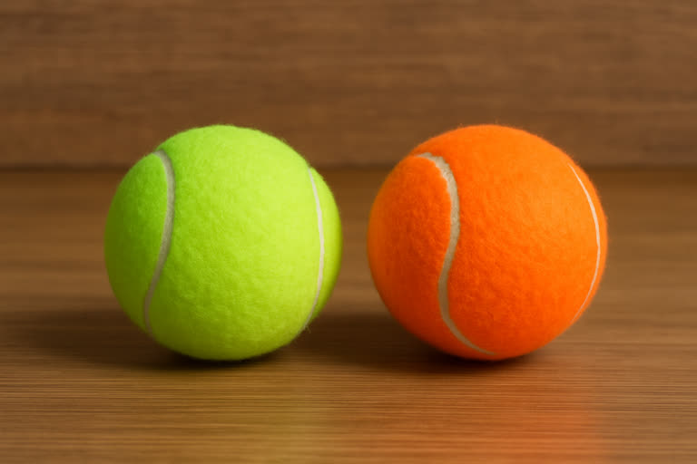
The snorlax plush toy deflates.
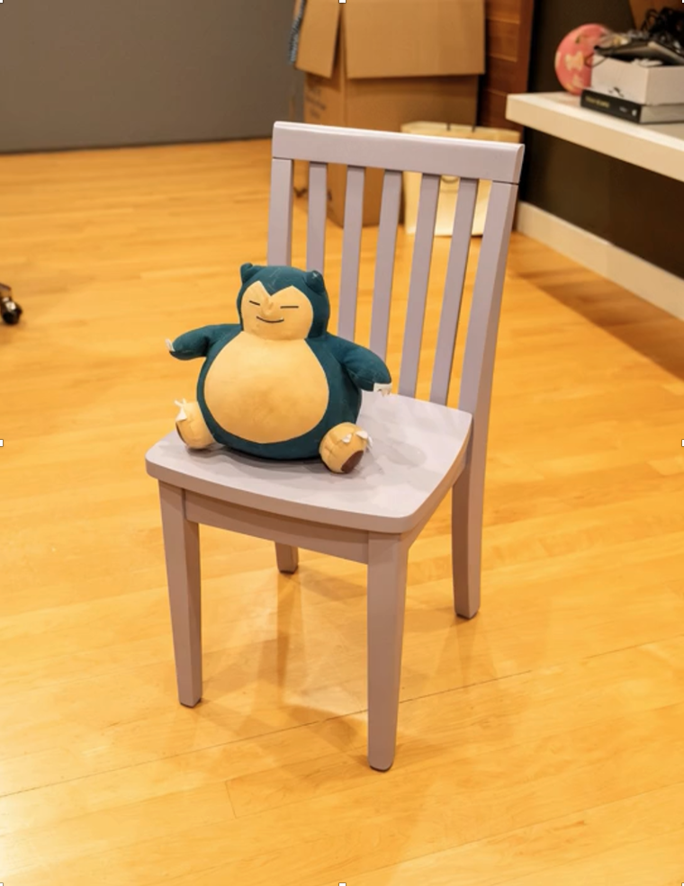
The red can moves right, hits the teddy on the right.

Stage 1: Camera-controlled Video Generation
Static Scene
Camera Trajectory
Ours
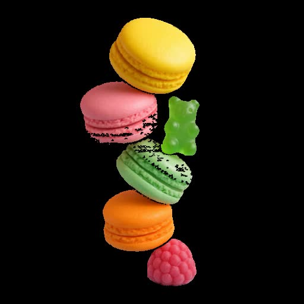
Full 360°
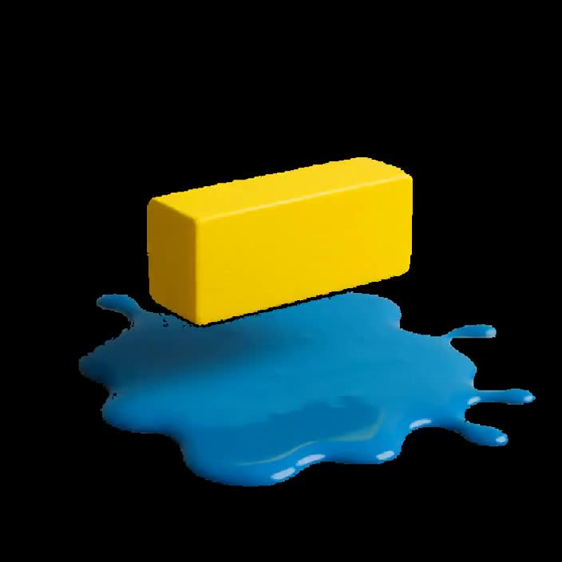
Full 360°
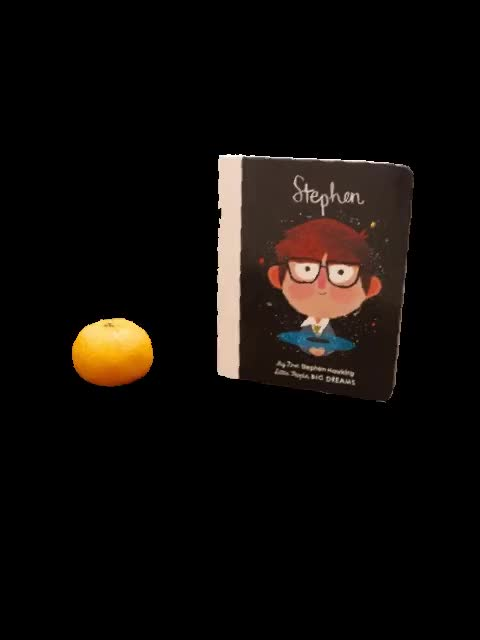
Full 360°
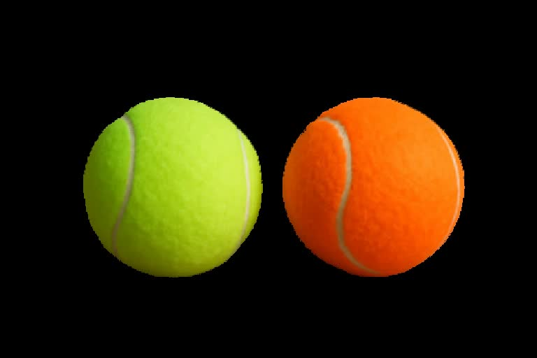
Full 360°
Dynamic Scene
Camera Trajectory
Ours
Zoom Out
Translate Down
Translate Up
Stage 2: Motion-conditioned Video Generation
The yellow brick falls right.

The book falls forward.

The red can moves right, hits the teddy on the right.
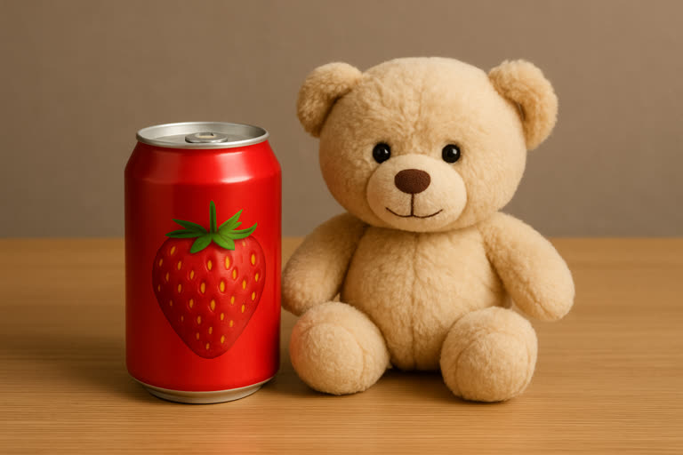
The snorlax plush toy deflates.